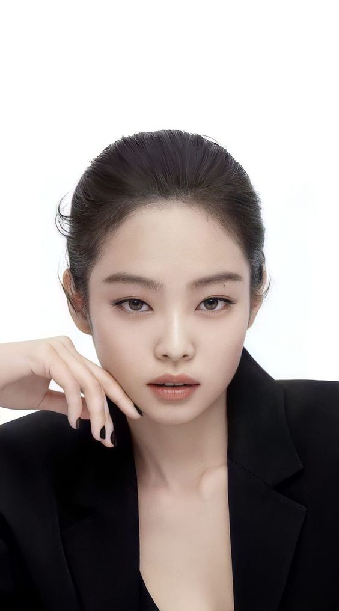
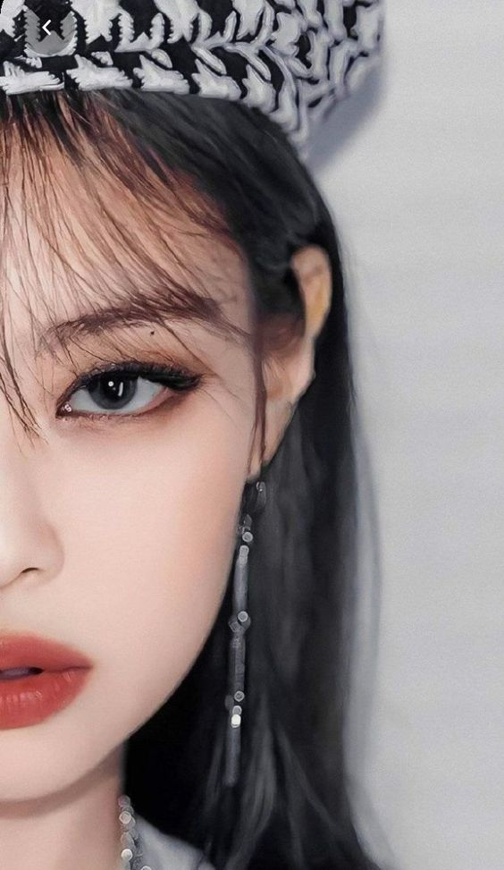
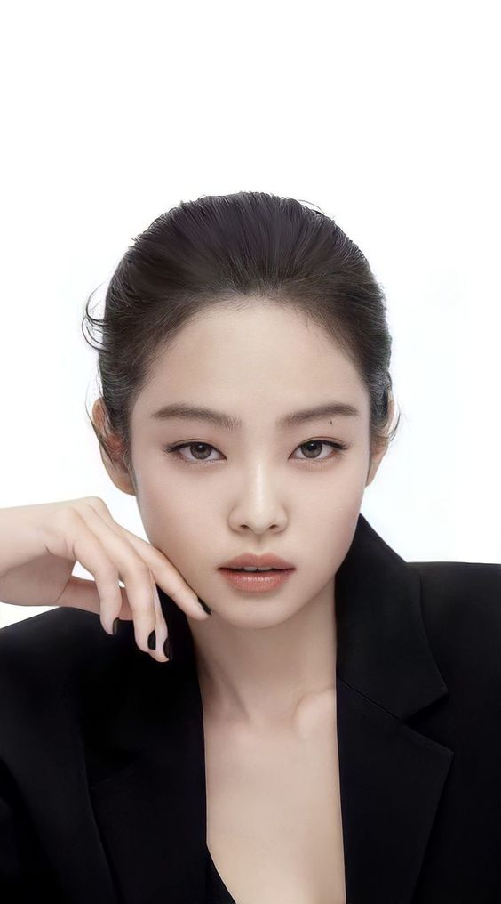
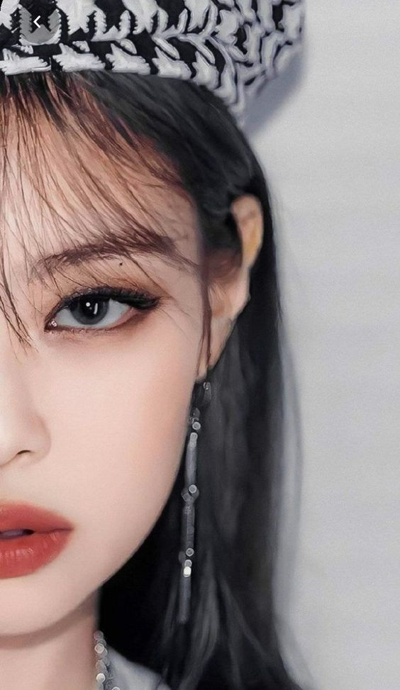

History of CHANEL
"YOU WON'T GET A SECOND CHANCE TO MAKE A FIRST IMPRESSION."
History of Chanel began with the fact that Coco, working as an ordinary clerk in a knitwear store, took an extremely interesting hobby - she created quirky and unusual hats. At that time, few would have guessed that one day these hats would win the hearts of the aristocrats of Paris.
Coco Chanel changed not only the idea of fashion, but also about fashion designers. Before that, fashion designers had been considered service personnel, who should not be allowed in high circles. Thanks to Chanel, fashion designers became an integral member of aristocratic society.
The house of Chanel was one of the first, who began to involve celebrities in the promotion of its products. Movie stars advertised the brand's clothes, many of them for many years became the face of the brand.
The history of the Chanel house is one of the most famous fashion houses in the
world.
It was a company whichgave to the world the Chanel No. 5, which sells every 30 seconds in the
world.
She owns 147 boutiques and stores around the world. The great Coco Chanel was able to dress all women
according to her own taste, which no one managed before. Andit's not surprising that the history of the
House of Chanel, as well as the history of its creator, is full of interesting moments.
 


